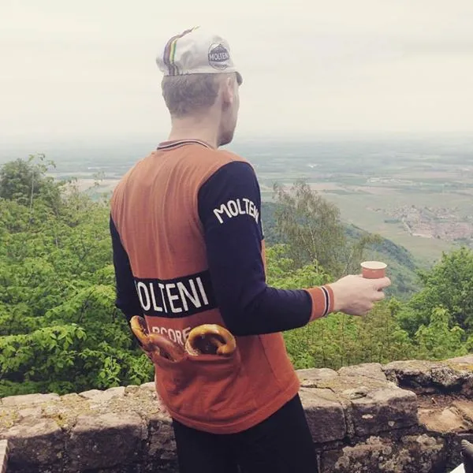
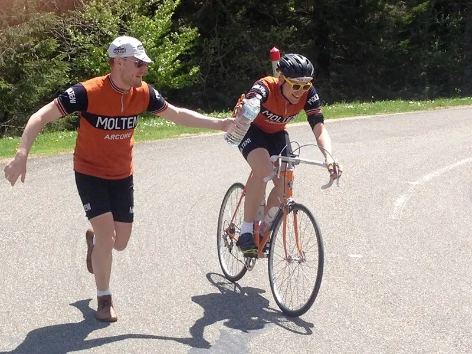
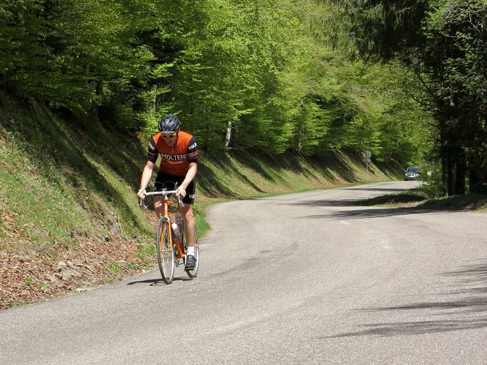

Squadra Molteni indtager Frankrig: Træningslejr i Alsace

Træningslejr i Alsace: Alsace har haft en omvandrende tilværelse under fransk, tysk og igen fransk herredømme.
Og der var da også tydeligt nervøse trækninger at spore, da Squadra Molteni’s to ryttere, Steffan Sørensen og storebror Kasper Sørensen, passerede grænsen for få dage siden.
Der ville blive udløst det ene dødbringende angreb efter det andet under deres træningslejr i Alsace.
Holdets ryttere har da også lagt Vogeserbjergene fladt ned. Det lokale commune i Alsace er nu ved at udvikle en genopretningsplan.
Deres kørsel har givet genlyd i hele cykelverdenen, og specielt en journalist har været specielt nærgående.

De to brødre har valgt at bruge regionen som træningsterræn forud for sommerens La Marmotte.
Fra løjtnant til hjælperytter på Grand Ballon
Efter to dage i Steffan’s baghjul måtte Kasper på tredjedagen, under dække af en knæskade, trække stikket før sidste opstigning til Grand Ballon.
Derpå var hans status som løjtnant erstattet med arbejdsopgaver på holdets vegne, hvor han måtte give den som langer fra vejsiden og følgebilen.
– når man ikke kan følge med, må man hjælpe holdet på andre måder, udtaler en bitter Kasper Sørensen.

Steffan’s kørsel kommer ikke bag på holdets sportsdirektør, som mener at storebror må til at lære lidt af sin lillebrors træningsmoral.
– Steffan har været en af holdets mest seriøse ryttere. Han har i denne sæson tabt 10 kilo.
Det kunne Kasper lære noget af! Der er ingen tvivl om, at vi er utrolig glade for at have Steffan på holdet når vi kommer til La Marmotte og de franske alper, udtaler Niels Bjørnsteen.

Ufiltreret belgisk øl er nøglen til succes
I sin konstante søgning efter “marginal gains”, har Steffan fundet ud af, at der i ufiltreret belgisk øl er et kalorieindhold der svarer til to halve håndmadder.
Derfor har han fået anstillet et kæmpe filter hjemme i garagen, hvor han kan filtreret sin egen øl, så kalorieindholder reduceres med 98% – uden at gå på kompromis med alkoholprocenten.
Squadra Molteni undersøger muligheden for at patentere denne løsning, så alle holdets ryttere kan få et lignede filter, der, efter ophavsmandens beregninger, kan filtrere 12 kubikmeter mørk hvedeøl om dagen.